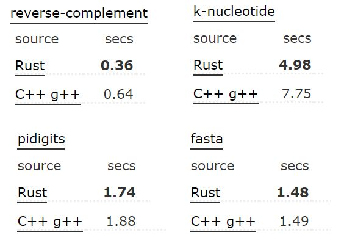
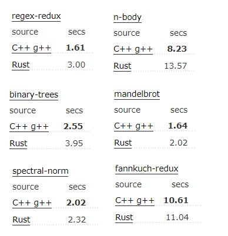

Lenguaje de programación: Rust
Integrantes:
-
Dyatlov Nikita
-
Marin Francisco
-
Prystupiuk Maximiliano
-
Williner Mariano
Historia
-
Multiparadigma
-
Sintaxis similar a C++
-
Diseñado por Graydon Hoare
-
Impulsado por Mozilla
-
Mantenido por la comunidad
Contribuciones de la comunidad
Por qué 'Rust'
Substring de RobUST + un tipo de hongo
Significado del logo
Target
-
Programadores frustrados de C/C++
-
Programación de sistemas
-
Programación segura
-
Programación concurrente
Características
-
Zero cost abstractions
-
No GC (RAII)
-
Task-based concurrency
-
Memory safety (❌ nulls ❌ dangling pointers ❌ data races)
-
No buffer overflow
-
Immutable by default
-
Higher-order functions
-
Pattern matching
-
Polymorphism (❌ herencia)
-
Generics
La intención del lenguaje es combinar varias características para obtener algo fácil de mantener y debuggear, seguro y eficiente.
Popularidad
El lenguaje más amado en Stack Overflow 2016 y 2017
Benchmarks
Como se dijo, su target son programadores de C++
Rust > C++

C++ > Rust

Cabe destacar que están en el mismo orden de magnitud
Herramientas
Compilador
Compila a ejecutable o a libreria. No existen los header files.
$ rustc main.rs
$ ./main
Cargo
Build system y package manager
$ cargo new hello_world --bin
Crea una estructura de proyecto, permite especificar y descargar dependencias, incluso inicializa git.
$ cargo build
Crates
Paquetes/librerias de Rust
Actualmente hay 12,425 listos para utilizar en crates.io
Forma de uso
- Cargo.toml
[package]
name = "hola"
version = "0.1.0"
authors = ["Rust <AguanteRust@gmail.com>"]
[dependencies]
rand = "0.3.0"
Dependencias por defecto en crates.io, pero se puede especificar la url.
Documentacion
Se pretende usar sintaxis markdown en comentarios para luego convertirlos en docs html.
$ cargo doc
Tests
Unit tests incluidos via anotaciones en el código.
$ cargo test
Conceptos básicos
Y no tanto.
Tipos básicos (1)
- Enteros con signo:
i8,i16,i32,i64,isize - Enteros sin signo:
u8,u16,u32,u64,usize - Punto flotante:
f32,f64 bool- Arrays:
[1, 2, 3],[0; 5] - Slices:
&array[1..4] - Unicode
charde 4 bytes:'a','♫' - Strings (UTF-8):
&stryString - Alias:
type Dollar = f64; let cookie_price: Dollar = 1.43;
Tipos básicos (2)
- Tuples:
(2, 5.8, 's') - Structs:
struct Point { x: f64, y: f64 }- Puede ser unit-like:
struct Comparator
- Puede ser unit-like:
- Tuple structs:
struct Point(i32, i32, i32) - Enums:
enum BoardGameAction { Move { squares: i32 }, Surrender, Chat(String) } - Rust no tiene null. Hay unit type,
(), cuyo único valor es(). Similar a un void.# #![allow(unused_variables)] #fn main() { let a: () = (); println!("{:?}", a) #}
Option
Similar al Maybe de Haskell o Nullable de C#, tiene algo o no tiene nada
enum Option<T> {
Some(T),
None
}
# #![allow(unused_variables)] #fn main() { fn checked_division(dividend: f64, divisor: f64) -> Option<f64> { if divisor == 0.0 { None } else { Some(dividend / divisor) } } // Se usa pattern matching para leer los resultados match checked_division(5.0, 0.0) { Some(result) => println!("result: {}", result), None => println!("failed!") } #}
Binding
let immutable_binding = 1let mut mutable_binding = 1- Mutabilidad como propiedad de binding
- Scope & Shadowing
- Inferencia de tipos en base de uso
const N: i32 = 5static N: i32 = 5- Se puede solo declarar, para luego inicializar
- Compilador prohíbe uso de variables no inicializadas, eso no es código compilable:
let a: String; println!("{}", a);
- Compilador prohíbe uso de variables no inicializadas, eso no es código compilable:
Expresiones
Rust es principalmente un lenguaje de expresiones.
Solo hay 2 tipos de statements:
- Declaration statement (
let) - Expression statement (evalua expresión e ignora su resultado)
- Expresion cuyo resultado se reprime con
;se evalúa a() - Block expression o control flow expression que no termina con expresión
- Expresion cuyo resultado se reprime con
# #![allow(unused_variables)] #fn main() { let num = { let mut sum = 0; for num in 0..16 { sum += num; } sum }; println!("{:?}", num); #}
Control de flujo
if / elsees una expresiónloopconbreakycontinuewhilefor x in 0..10para usar con iteradoresif letpara evaluar desestructuración y asignar al mismo tiempo# #![allow(unused_variables)] #fn main() { let hayString = Some("Hay string!"); if let Some(text) = hayString { println!("{}", text); } #}while letlet mut x = BoardGameAction::Move { squares: 1 }; while let BoardGameAction::Move { squares } = x { //x changes }
Pattern matching
- Compilador exige ramas para todos los valores posibles
- También es expresión
let boolean = true; let binary = match boolean { false => 0, true => 1 }; - Soporta desestructuración
- Numerosas variedades:
'r'3 | 4 | 5num @ 5...29(0, y)Color::RGB(r, g, b)Point { x, y, _ }- match guards para filtrar ramas:
(x, y) if x + y == 0
Funciones
fn foo(x: i32) -> i32 {
...
//expression
}
- Obligatorio indicar los tipos
- Existe
return, se considera poco sano - Funciones divergentes:
fn diverges() -> ! {...}- Nunca se devuelven, distinto de devolver "nada" (unit type,
()) - Para wrappear loops infinitos o codigo que termina el programa
- Nunca se devuelven, distinto de devolver "nada" (unit type,
- Binding de función a una variable
# #![allow(unused_variables)] #fn main() { fn plus_one(i: i32) -> i32 { i + 1 } let f = plus_one; println!("{}", f(5)); #}
Métodos
No hay clases de cajon, sí los mecanismos de POO
# #![allow(unused_variables)] #fn main() { struct Point { x: f64, y: f64 } impl Point { fn new(x: f64, y: f64) -> Point { //associated function = static Point { x: x, y: y } } fn distance_to_origin(&self) -> f64 { f64::sqrt(f64::powf(self.x, 2.0) + f64::powf(self.y, 2.0)) } } let c = Point::new(4.0, -3.0); println!("{}", c.distance_to_origin()); #}
Traits (1)
# #![allow(unused_variables)] #fn main() { struct Square { side: f64 } struct Circle { radius: f64 } trait Shape { fn area(&self) -> f64; } impl Shape for Square { fn area(&self) -> f64 { self.side * self.side } } impl Shape for Circle { fn area(&self) -> f64 { std::f64::consts::PI * (self.radius * self.radius) } } let s = Square { side: 2.5 }; let c = Circle { radius: 5.0 }; println!("s.area: {s_a}, c.area: {c_a}", s_a = s.area(), c_a = c.area()); #}
Traits (2)
- Permiten implementaciones por defecto que pueden ser sobreescritas en
impl - Permiten realizar "herencia", solo a nivel de traits
trait Foo { fn foo(&self); } trait Bar : Foo { fn bar(&self) { self.foo(); } } struct Baz; impl Foo for Baz {...} impl Bar for Baz { fn bar(&self) {...} }
Generics
fn foo(shape: Shape) {...}
foo(Square { side: 5.0 });
No. Para que funcione: ganerics y trait bound.
fn foo<T: Shape>(shape: T) {...}
- Permite tipos múltiples y trait bounds múltiples.
fn bar<T, K>(x: T, y: K) where T: Shape_3D, K: Shape_2D + Clone {...} - Aplicable a structs.
struct Object<T: 3D_Shape, K: Shape_2D> { form: T, sprite: K, }
High Order Functions
# #![allow(unused_variables)] #fn main() { fn mul(x: f64, n: f64) -> f64 { x * n } fn sum(x: f64, n: f64) -> f64 { x + n } fn div(x: f64, n: f64) -> f64 { x / n } fn sub(x: f64, n: f64) -> f64 { x - n } fn expr(base: f64, n: f64, functions: Vec<fn(f64, f64) -> f64>) -> f64 { let mut result = base; for func in functions.iter() { result = func(result, n); } result } let mut functions: Vec<fn(f64, f64) -> f64> = Vec::new(); functions.extend([sum, mul, sub, div].iter()); println!("{}", expr(3.0, 2.0, functions)); // (((3+2)*2)-2)/2 = 4 #}
Lazy
- No existe en forma nativa (hay librería hecha por comunidad)
- Internamente usa lazy para iteradores
# #![allow(unused_variables)] #fn main() { // suma de cuadrados de números impares hasta un límite let limit = 10; let result: u32 = (0..) .take_while(|&n| n <= limit) .filter(|&n| n % 2 == 1) .map(|n| n * n) .fold(0, |sum, i| sum + i); println!("{}", result); #}
Conceptos fundamentales
Lo interesante del lenguaje.
Manejo de errores
No existen las exepciones.
Si el error es catastrófico: ¡Pánico 😱!
Si es salvable, devolver un struct con el resultado o el error.
Si es algo que se espera que pueda ser nada, y no un error, devolver un Option.
Panic!
Macro que termina el programa.
Por defecto limpia la memoria antes de abortar, pero se puede cambiar en las opciones de compilación.
Uso:
fn main() { panic!("Paniquié!"); }
En la libreria estandar:
#fn main() { let vector = vec![1,2,3]; vector[100]; #}
Método seguro: Devuelve un Option
#fn main() { let vector = vec![1,2,3]; println!("{:?}",vector.get(100)); #}
Result
Para errores salvables, un simple struct.
#fn main() {} enum Result<T, E> { Ok(T), Err(E), }
Se usa con pattern matching
#use std::fs::File; #use std::io::ErrorKind; #fn main() { let f = File::open("noExiste.txt"); match f { Ok(_file) => println!("OK"), Err(ref _error) if _error.kind() == ErrorKind::NotFound => { println!("{:?}",_error) }, Err(_error) => { panic!() }, }; #}
Azucar
Si hay error, panic, sino obtener el valor interior:
#use std::fs::File; #fn main() { File::open("noExiste.txt").unwrap(); #}
Lo mismo pero permite poner un mensaje:
#use std::fs::File; #fn main() { File::open("noExiste.txt").expect("Un mensaje"); #}
Propagación de results
Se puede lanzar hacia arriba a mitad de expresión con "return"
#use std::io; #use std::fs::File; fn main() { println!("{:?}",leerArchivo()); } fn leerArchivo() -> Result<String, io::Error> { let f = File::open("noExiste.txt"); let mut f = match f { Ok(file) => file, Err(e) => return Err(e), }; // Imaginar que sacamos info del archivo Ok(String::new()) }
Azucar
Se usa el símbolo "?"
#use std::io; #use std::fs::File; fn main() { println!("{:?}",leerArchivo()); } fn leerArchivo() -> Result<String, io::Error> { let f = File::open("noExiste.txt")?; // Imaginar que sacamos info del archivo Ok(String::new()) }
El compilador se asegura que "?" solo funciona dentro de funciones que pueden devolver result.
Heap, stack, referencias
Stack
Se alocan los tipos básicos numéricos de tamaño conocido en tiempo de compilación.
- Enteros
- Floats
- Bools
- Tuplas que contengan solo estos tipos
Se pasan por copia.
#fn main() { let mut a = 1; let mut b = a; b += 1; println!("a:{} b:{}",a,b); #}
Heap
El resto de los tipos se aloca en el heap.
Luego se los pasa por referencia.
Si se quiere copia hay que hacerlo explicito:
#fn main() { let a = String::from("Hola"); let mut b = a.clone(); b.push('!'); println!("a:{} b:{}",a,b); #}
Si intento usar dos referencias a algo... no compila!
#fn main() { let a = String::from("Hola"); let b = a; println!("a:{} b:{}",a,b); #}
Por que?
Cuando termina el scope de una variable, se la libera de memoria. Si tuvieramos dos punteros a lo mismo, se lo liberaría 2 veces. Rust ataja este problema en tiempo de compilación. Crea el concepto de "ownership", "move", y "borrowing".
Ownership y move
Las reglas de Rust
- Todo valor en Rust tiene una variable que se llama owner.
- En un dado momento, solo puede haber un owner.
- Cuando el owner sale de scope, se hace drop de la variable.
Estas reglas son obligatorias y chequeadas por el compilador.
Solo el owner puede hacer uso de la variable.
Move
Se llama move al cambio de owner. Pasar el valor, retornarlo, o bindearlo a otra variable cambia el owner.
❌
#fn main() { let s1 = String::new(); let _s2 = s1; println!("{}",s1); #}
❌
#fn main() { let s1 = String::new(); { let _s2 = s1; } println!("{}",s1); #}
❌
fn seVuelveOwner(_s : String) {} fn main() { let s = String::from("Rust"); seVuelveOwner(s); println!("{}",s); }
✔️
fn devuelveOwner(s : String) -> String { s } fn main() { let mut s = String::from("Rust"); s = devuelveOwner(s); println!("{}",s); }
Borrow
Operador de referencia: &
-
&Tipo : El tipo es una referencia inmutable
-
&mut Tipo : El tipo es una referencia mutable
-
&variable : Obtiene una referencia a la variable
-
&mut variable : Obtiene una referencia mutable a la variable
-
*variable : Desreferencia, si hace falta.
Se "pide prestado" el valor. Nos volvemos dueños, pero al final lo devolvemos a su dueño original.
Se mantienen las reglas de ownership.
✔️
fn pidePrestado(_s : &String) { } // Inmutable fn main() { let s = String::from("Rust"); pidePrestado(&s); println!("{}",s); }
✔️
fn pidePrestado(s : &mut String) { // Mutable s.push('!'); } fn main() { let mut s = String::from("Rust"); pidePrestado(&mut s); println!("{}",s); }
Pero y los métodos?
Los metodos toman &self como primer parametro y Rust hace desreferenciacion automática apropiada para que sea más lindo, en vez de tener varias sintaxis.
Se puede ver la equivalencia a continuación.
#fn main() { let mut s = String::from("Rust"); String::push(&mut s, '!'); (&mut s).push('!'); s.push('!'); println!("{}",s) #}
En otros casos, si hace falta desreferenciar explicitamente.
✔️
#fn main() { let mut v1 = 1; { let v2 = &mut v1; *v2 += 1; } println!("v1:{}",v1); #}
Reglas de borrows
-
En un momento dado se puede tener de forma mutuamente exclusiva:
-
Una referencia mutable
-
N referencias inmutables
-
-
Las referencias deben ser siempre validas
✔️
#fn main() { let mut v1 = 1; let v2 = &v1; let v3 = &v1; let v4 = &v1; println!("v1:{} v2:{} v3:{} v4:{}",v1,v2,v3,v4); #}
❌
#fn main() { let mut v1 = 1; let v2 = &mut v1; *v2 += 1; println!("v1:{}",v1); #}
❌
#fn main() { let mut _v1 = 1; let _v2 = &mut _v1; let _v3 = &mut _v1; #}
Sigue valiendo que solo se puede modificar el valor mutable si soy dueño.
❌
#fn main() { let mut _v1 = 1; let _v2 = &_v1; _v1 += 1; #}
Lifetimes
Concepto de Rust: Poder saber si seguira siendo valido lo que estamos refiriendo.
✔️
fn main() { let a; { let b = 5; a = b; } println!("a: {}", a); }
❌
fn main() { let a; // -------+- 'a { // | let b = 5; // -+- 'b | a = &b; // | | } // -+ | println!("a: {}", a);// -+ }
❌
static a : &str = "Rust"; fn referencia() -> &str { &a } fn main() { let b = referencia(); }
❌
fn fun(a:&String, b:&String) -> &String { &a } fn main() { let a = String::new(); let b = String::new(); let c = fun(a,b); }
El lifetime es necesario para saber cuando terminar el borrow.
Sintaxis de lifetime
-
fn funcion<'a> especifica un tiempo de vida genérico para asociar
-
&'a Tipo: Referencia con tiempo de vida explicito
Nota: Si dos parametros de entrada tienen el mismo lifetime asignado, el valor tomado será el más chico
✔️
static a : &str = "Rust"; fn referencia() -> &'static str { &a } fn main() { let b = referencia(); }
✔️
fn fun<'a>(a : &'a String, b : &String) -> &'a String { &a } fn main() { let a = String::new(); let b = String::new(); let c = fun(&a,&b); }
Los casos típicos son inferidos por el compilador.
✔️
fn fun(a : & String) -> & String { &a } fn main() { let a = String::new(); let c = fun(&a); }
El concepto también aplica a structs con referencias
# #![allow(unused_variables)] #fn main() { struct algo<'a> { s : &'a str, } #}
Para que esto de ownership y lifetimes?
-
Manejo de memoria "automático" sin GC (RAII forzado)
-
No permite cosas inseguras en memoria: Usar cosas sin inicializar, no hay overflows/dangling pointers/segfaults.
-
Hace dificil tener memory leaks, aunque no imposible.
-
Evita data races.
Basicamente el código es seguro en tiempo de compilación.
Pero todo esto es un poco restrictivo.
Closures
Funciones anonimas que pueden capturar estado externo.
#fn main() { let a = String::from("A"); let f = || { println!("{}",a); }; let g = |p1:i32| p1+1; let h = |p1,p2| -> i32 { p1+p2 }; f(); println!("{}",g(1)); println!("{}",h(1,1)); #}
Se pueden inferir los tipos de parametro o se los puede explicitar. Los {} son opcionales para funciones de una sola linea.
Capturar el ambiente
-
Por referencia: &T, borrow inmutable
-
Por referencia mutable: &mut T, borrow mutable
-
Por valor: T, se vuelve owner
El compilador infiere que es lo más apropiado segun lo que hagamos dentro.
Siguen valiendo todas las reglas de Rust ya vistas.
❌
#fn main() { let a = String::from("A"); let f = || { println!("{}",a); }; // Borrow inmutable let _c = a; // Intento tomar ownership f(); #}
Tipo de closures
Son de tipo desconocido por lo cual hay que usar generics.
Pero, segun como capturan el ambiente implementan uno de los siguientes traits.
-
Fn: Borrow inmutable
-
FnMut: Borrow mutable
-
FnOnce: Se vuelve owner
fn llama<F>(mut f : F) where F: FnMut(char) { f('!'); } fn main() { let mut a = String::from("Rust"); let f = |p1| { a.push(p1); println!("{}",a); }; llama(f); }
Captura por valor
Para forzar que se vuelva owner se usa la palabra move.
✔️
#fn main() { let mut a = String::from("Rust"); { let mut f = || { a.push('!'); println!("{}",a); }; f(); } println!("{}",a); #}
❌
#fn main() { let mut a = String::from("Rust"); { let mut f = move || { a.push('!'); println!("{}",a); }; f(); } println!("{}",a); #}
Smart pointers
Nos facilitan la vida permitiendonos doblar algunas reglas de Rust.
Uno puede crear los suyos propios, pero hablaremos de los de la libreria estandar.
Box
Una caja con algo adentro. No tiene overhead. Es de tamaño fijo.
Casos de uso
-
Necesito algo de tamaño fijo, pero mi variable es de tamaño variable. Lo meto en esta caja que es de tamaño fijo.
-
Tengo datos y que naturalmente van al stack y se pasan por copia, pero los quiero en el heap por referencia
-
Quiero ser dueño de algo con una trait particular, pero no me interesa su tipo.
Ejemplos
fn main() { let mut a = Box::new(1); *a += 1; println!("a = {}", *a); }
❌
enum ListaEstiloOZ<T>{ Val(T, ListaEstiloOZ<T>), Nil, } #fn main() {}
✔️
#use std::fmt; ##[derive(Debug)] enum ListaEstiloOZ<T>{ Val(T, Box<ListaEstiloOZ<T>>), Nil, } #use ListaEstiloOZ::Val; #use ListaEstiloOZ::Nil; fn imprimir<T : fmt::Display>(lista : ListaEstiloOZ<T>) { match lista { Nil => println!("Nil"), Val(a,b) => { println!("{}",a); imprimir(*b);}, } } fn main(){ let a = Val(1, Box::new(Val(2, Box::new(Nil)))); println!("{:?}",a); imprimir(a); }
Rc: Reference counted smart pointer
Permite multiples owners, pero solo inmutablemente.
Clonar el puntero copia la referencia interna e incrementa el contador de referencias.
Cuando las referencias se vuelven 0, se borra el contenido.
✔️
use std::rc::Rc; fn main() { let a = Rc::new(String::from("Rust")); let b = Rc::clone(&a); let c = Rc::clone(&a); println!("{}-{}-{}",a,b,c); println!("#refs: {}",Rc::strong_count(&a)); }
❌
use std::rc::Rc; fn main() { let mut a = Rc::new(String::from("Rust")); a.push('!'); }
Deref y drop
Traits especiales de Rust.
Deref
Permite especificar que obtenemos al desreferenciar el struct, por lo cual podemos hacer que se comporte como una referencia común.
Ademas realiza coerciones automáticas cuando las funciones y demas esperan referencias.
DerefMut
Lo mismo pero para cuando se esperan referencias mutables.
Drop
Especifica que tiene que hacer el struct cuando sale del scope.
Casos tipicos: Reference counting, struct que representa un archivo, struct que representa un mutex.
Si por alguna razon queremos llamar a drop antes que lo haga el lenguaje naturalmente, esta permitido via std::mem::drop.
RefCell
Similar a un Box, tambien solo para single threaded, pero permite compilar rompiendo las reglas de borrows.
Las reglas aun deben cumplirse en tiempo de ejecución, de no hacerlo hay un panic!.
Pattern de mutabilidad interior
Mediante borrow() y borrow_mut() podemos elegir que tipo de borrow queremos hacer en tiempo de ejecución, pese a que la refcell sea inmutable.
❌
fn main() { let a = String::from("Rust"); a.push('!'); }
✔️
fn main() { let mut a = String::from("Rust"); a.push('!'); println!("{}",a); }
✔️
use std::cell::RefCell; fn main() { let a = RefCell::new(String::from("Rust")); a.borrow_mut().push('!'); println!("{}",a.borrow()); }
❌
use std::cell::RefCell; fn main() { let a = RefCell::new(String::from("Rust")); let _b = a.borrow_mut(); let _c = a.borrow(); }
Combinado con Rc
Nos permite tener multiples borrows mutables 😲
Hay que seguir respetando las reglas de runtime.
✔️
#use std::rc::Rc; #use std::cell::RefCell; fn main() { let a = Rc::new(RefCell::new(String::from("Rust"))); let b = Rc::clone(&a); let c = Rc::clone(&a); a.borrow_mut().push('!'); b.borrow_mut().push('!'); c.borrow_mut().push('!'); println!("{}",a.borrow()); }
❌
#use std::rc::Rc; #use std::cell::RefCell; fn main() { let a = Rc::new(RefCell::new(String::from("Rust"))); let b = Rc::clone(&a); let _ra = a.borrow_mut(); let _rb = b.borrow_mut(); }
Weak
Si usamos Rc, es posible crear referencias circulares que nunca se liberan.
Leakear memoria es indeseable, pero permitido por ser memory safe.
El Weak es un derivado del Rc que no aumenta el contador, no toma ownership.
Sin embargo, no podría esto causar dangling pointers? El weak devuelve un Option.
#use std::rc::Rc; fn main() { let a = Rc::new(String::from("Rust")); let b = Rc::clone(&a); let c = Rc::downgrade(&a); println!("strong = {}, weak = {}",Rc::strong_count(&a),Rc::weak_count(&a)); println!("{:?}",b); println!("{:?}",c); println!("{:?}",c.upgrade()); drop(a); drop(b); println!("{:?}",c.upgrade()); }
Resumen
-
Box: Tamaño fijo, contiene algo que esta en el heap.
-
Rc: Permite multiples owners inmutables. Single threaded.
-
Weak: Variante del Rc para no leakear memoria en ciclos.
-
RefCell: Permite romper las reglas de borrows en tiempo de compilación, aunque no de ejecución. Single threaded.
Otros que no vimos
-
Cell: Lo mismo que el refcell pero para valores copy. No causa panics porque no hace falta sin referencias.
-
Arc: Version thread safe de Rc. Muchas veces el tipo que llevan dentro es un atomic.
Raw pointers
Como los de C.
Se pierde absolutamente toda seguridad.
Raramente necesarios para funcionamiento interno con ciertas librerias y demas.
#fn main() { let x = 5; let raw = &x as *const i32; let points_at = unsafe { *raw }; println!("raw points at {}", points_at); #}
Concurrencia
Uno de los objetivos principales de Rust.
Threads
-
Rust utiliza el modelo conocido como 1:1 (por cada thread del lenguaje, hay un thread del sistema operativo) dado que tiene menos overhead que el modelo M:N.
-
Se crean con la función
thread::spawnque recibe un closure con el código a ejecutar en el nuevo thread y devuelve unJoinHandleque se puede utilizar para esperar a que el thread termine de ejecutarse. -
Para poder utilizar datos del thread principal se necesita usar la palabra reservada
movepara que el nuevo thread pueda tomar ownership de esos datos.
Ejemplo
use std::thread; fn main() { let data_from_main_thread = "data from main thread"; let handle = thread::spawn(move || { for i in 1..10 { println!("Spawned thread print Nº {}. Data: {}.", i, data_from_main_thread); } }); for i in 1..5 { println!("Print Nº {} from main thread.", i); } handle.join(); }
Canales
-
Se utilizan para pasar mensajes entre threads.
-
Se crean con la función
mpsc::channelque devuelve una tupla con un sender y un receiver. El sender puede clonarse. -
Para enviar mensajes se usa la función
sendy para recibir mensajes las funcionestry_recvyrecv. La última es bloqueante. -
Se puede usar el receiver como un iterador para recibir valores hasta que se cierre el canal.
-
Los datos enviados en la función
sendpasan a ser propiedad del receiver.
Ejemplos
use std::sync::mpsc; use std::thread; fn main() { let (sender, receiver) = mpsc::channel(); let sender2 = sender.clone(); thread::spawn(move || { let message = String::from("message"); sender.send(message).unwrap(); }); thread::spawn(move || { let message2 = String::from("message2"); sender2.send(message2).unwrap(); }); for _ in 0..2 { println!("Received: {}", receiver.recv().unwrap()); } }
use std::sync::mpsc; use std::thread; fn main() { let (sender, receiver) = mpsc::channel(); let sender2 = sender.clone(); thread::spawn(move || { let message = String::from("message"); sender.send(message).unwrap(); }); thread::spawn(move || { let message2 = String::from("message2"); sender2.send(message2).unwrap(); }); for received in receiver { println!("Received: {}", received); } }
Memoria compartida
Mutex
-
Permiten que los datos sean accedidos por un sólo thread a la vez.
-
Se crean con la función
Mutex::newsobre los datos que queremos proteger. -
Para poder acceder a los datos se debe obtener primero un lock sobre ellos mediante la función
lock. -
Al salir de scope, el mutex se libera automáticamente.
-
Para compartir un mutex entre varios threads, se debe wrappearlo en un atomic reference counter el cual garantiza que las operaciones sean thread safe.
Ejemplo
use std::sync::{Mutex, Arc}; use std::thread; fn main() { let counter_mutex = Arc::new(Mutex::new(0)); let mut handles = vec![]; for i in 0..10 { let inner_counter_mutex = counter_mutex.clone(); let handle = thread::spawn(move || { let mut counter = inner_counter_mutex.lock().unwrap(); println!("Thread Nº {} has the lock", i); *counter += 1; println!("Thread Nº {} still has the lock", i); }); handles.push(handle); } for handle in handles { handle.join().unwrap(); } println!("Counter: {}", *counter_mutex.lock().unwrap()); }
Extensión
Rust permite crear nuestra propia implementación de concurrencia diferente a la que se encuentra en la standard library utilizando los traits Send and Sync.
Send
-
Indica que el ownership puede ser transferido a otro thread.
-
Casi todos los tipos son
Sendcon algunas excepciones. -
Los tipos que están compuestos por tipos
Send, también lo son.
Sync
-
Indica que el acceso desde múltiples threads es seguro.
-
Los tipos que están compuestos por tipos
Sync, también lo son.
Características avanzadas
El 1% restante de Rust.
Rust inseguro
-
Rust permite utilizar código considerado inseguro, delegando la responsabilidad en el programador, dentro de un bloque definido con la palabra reservada
unsafe. -
Dentro de un bloque marcado como inseguro, el compilador no realiza chequeos de memory safety lo que permite ciertas libertades.
Desreferenciado de raw pointers
- Si bien la creación de estos punteros es válida fuera de un bloque inseguro, el acceso a la información a la que apunta no lo es.
Funciones inseguras
-
Funciones que tienen en su interior código inseguro.
-
Se declaran agregando
unsafeantes de la definición de la misma.
Abstracciones seguras con código inseguro
- Casos en que el compilador, por ser conservador, no permite realizar una operación que sería válida.
Ejemplo
use std::slice; fn main() { fn split_at_mut(slice: &mut [i32], mid: usize) -> (&mut [i32], &mut [i32]) { let len = slice.len(); let ptr = slice.as_mut_ptr(); assert!(mid <= len); unsafe { (slice::from_raw_parts_mut(ptr, mid), slice::from_raw_parts_mut(ptr.offset(mid as isize), len - mid)) } } }
Llamado de código externo
- Llamar código escrito en otro lenguaje es, para Rust inseguro por definición.
Acceso o modificación de variable estática mutable
- Rust lo considera inseguro dado que pueden ser accedidas por varios threads lo que puede causar condiciones de carrera.
Implementación de traits inseguros
-
Similar a las unsafe functions.
-
Se declaran agregando
unsafeantes de la definición y de la implementación del trait.
Tiempos de vida avanzados
Lifetime Subtyping
-
Si el lifetime
'bcontiene'a, entonces'bes subtipo de'a. -
Se declara de la forma
'b: 'a.
Ejemplos
fn main() { fn max<'a, 'b: 'a>(x: &'a i32, y: &'b i32) -> &'a i32 { if *x > *y { x } else { y } } }
Lifetime Bounds
-
Son restricciones para los lifetimes de los tipos genéricos.
-
Se declaran de la misma forma que en lifetime subtyping.
Ejemplos
fn main() { struct Ref<'a, T: 'a>(&'a T); }
Traits avanzados
Associated Types
-
Son placeholders de tipos en la definición de un trait.
-
Se definen con la palabra reservada
type.
Ejemplo
fn main() { pub trait Iterator { type Item; fn next(&mut self) -> Option<Self::Item>; } struct Counter{ } impl Iterator for Counter { type Item = u32; fn next(&mut self) -> Option<Self::Item> { None } } }
Sobrecarga de operadores
- Rust no permite crear ni sobrecargar operadores pero provee operaciones en la librería estándar que si pueden ser sobrecargadas implementando los traits asociados con el operador.
Ejemplo
use std::ops::Add; fn main() { struct Millimeters(u32); struct Meters(u32); impl Add for Millimeters { type Output = Millimeters; fn add(self, other: Millimeters) -> Millimeters { Millimeters(self.0 + other.0) } } impl Add<Meters> for Millimeters { type Output = Millimeters; fn add(self, other: Meters) -> Millimeters { Millimeters(self.0 + (other.0 * 1000)) } } }
Fully Qualified Syntax
Ejemplo
trait Animal { fn baby_name() -> String; } struct Dog; impl Dog { fn baby_name() -> String { String::from("Spot") } } impl Animal for Dog { fn baby_name() -> String { String::from("puppy") } } fn main() { println!("A baby dog is called a {}", <Dog as Animal>::baby_name()); }
Supertraits
- Son traits requeridos por el trait que se está implementando.
Ejemplo
trait Supertrait { } trait HasSupertrait: Supertrait { } fn main() { struct SomeStruct { } impl HasSupertrait for SomeStruct { } impl Supertrait for SomeStruct { } }
Newtype pattern
-
Rust solo permite implementar traits siempre y cuando el trait o el tipo sean locales a nuestro crate.
-
Este pattern se puede utilizar para evitar esa restricción.
Ejemplo
use std::fmt; fn main() { struct Wrapper(Vec<String>); impl fmt::Display for Wrapper { fn fmt(&self, f: &mut fmt::Formatter) -> fmt::Result { write!(f, "[{}]", self.0.join(", ")) } } }
Tipos avanzados
Type aliases
- Rust permite definir alias para los tipos de la siguiente forma
type alias = tipo
The Never type
-
En Rust existe el tipo
!llamado Never type. -
Se utiliza para indicar que una función nunca retorna.
Ejemplo
fn main() { fn never_return() -> ! { loop { } } }
Trait Sized
-
Por defecto los generics aceptan sólo tipos para los cuales se conoce en tiempo de compilación el tamaño que ocupan en memoria.
-
Para indicar al compilador que se quiere utilizar un usized type, se debe agregar la sintaxis
<T: ?Sized>
Ejemplo
fn main() { fn generic_function<T>(t: T) { } fn actual_generic_function<T: Sized>(t: T) { } fn dinamically_sized_generic_function<T: ?Sized>(t: &T) { } }
Advanced Functions & Closures
Function pointers
-
Las funciones pueden recibir otras funciones como parámetro.
-
Se debe indicar con el tipo
fn, que tipo de argumento(s) recibe y que tipo devuelve (si lo hiciera) de la misma forma que se definen las funciones normalmente.
Ejemplo
fn returns_five(x: i32) -> i32 { println!("returns_five invoked with argument: {}", x); 5 } fn returns_five_as_param(function: fn(i32) -> i32, argument: i32) { println!("returns_five_as_param invoked. Result {}", function(argument)); } fn main() { returns_five_as_param(returns_five, 1); }
Returning Closures
-
Rust no permite utilizar closures cómo return type de una función porque no puede saber cuanto espacio va a necesitar para almacenar dicho closure.
-
Se debe encapsular haciendo uso de un trait.
Ejemplo
fn main() { fn returns_closure() -> Box<Fn(i32) -> i32> { Box::new(|x| x + 1) } }
Llamando código de C
- Suponiendo que tenemos un archivo de c llamado c_file.c con una función llamada c_function().
Ejemplo
#[link(name = "c_file")] extern { fn c_function(); } fn safe_call_to_c_function() { println!("Calling c function"); unsafe { c_function(); } } fn main() { safe_call_to_c_function(); }
Uso
Rust es uno de los lenguajes mas amados de los últimos años, por consiguiente, cada vez mas organizaciones lo están comenzando a utilizar.
Casos de uso
La página oficial del lenguaje Rust cuenta con la sección friends of rust donde se encuentra un listado completo de las organizaciones que utilizan Rust en producción (y quieren que el mundo lo sepa), siendo las mas conocidas las siguientes:
-
Mozilla.
-
Dropbox.
-
Academia.edu.
-
ImageOptim.
-
Atlassian.
-
Samsung SmartThings.
Bibliografía
The rust programming language, ambas ediciones:
https://doc.rust-lang.org/book/
Rust by example:
The Rustonomicon: Fetures arcanas, inseguras, inestables